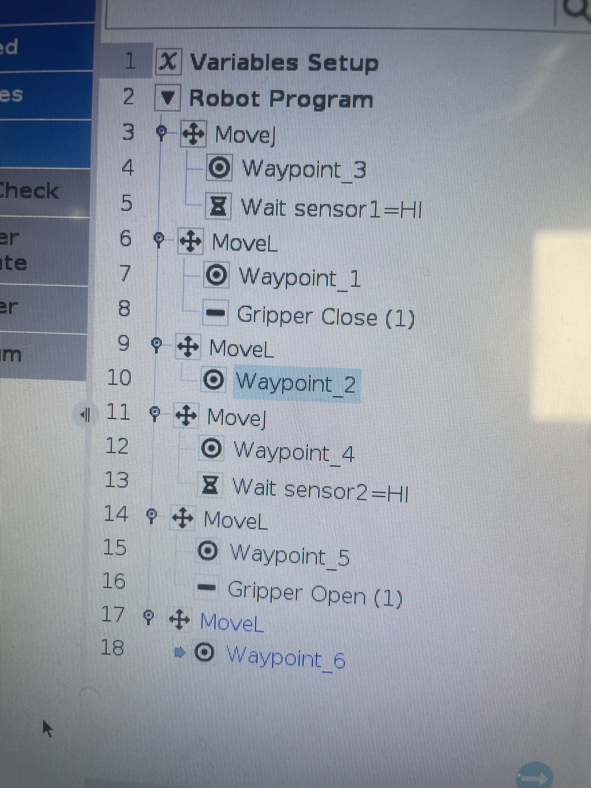

Bras Robotique Universal Robots
Programmation Cobotique
Programmation et mise en service d'un bras manipulateur collaboratif Universal Robots. Un projet tourné vers l'industrie 4.0 et l'automatisation avancée.
Retour aux projetsL'Interface de Programmation (Polyscope)
La programmation d'un cobot Universal Robots se fait principalement via son interface graphique Polyscope, qui permet de structurer la logique sous forme d'arbre.
Au cours de ce projet, j'ai manipulé plusieurs structures :
- Mouvements : Utilisation des instructions
MoveJ(articulaire) etMoveL(linéaire) pour des trajectoires fluides. - Capteurs : Intégration de conditions comme
Wait sensor1=HIpour synchroniser le robot avec son environnement. - Préhenseur : Commandes
Gripper CloseetOpenpour attraper et déposer des objets dynamiquement.

Arborescence Polyscope - Mouvements et Capteurs
Réalisation Pratique & Vidéo
L'objectif était de déplacer le cube d'un point défini (en vert sur la vidéo) à un autre point vert. Le passage de la théorie à la pratique demande beaucoup de paramétrages. Les positions spatiales (Waypoints) doivent être approchées avec rigueur pour ne pas endommager le matériel ni l'environnement.
Ce projet démontre ma capacité à comprendre la logique séquentielle, à l'appliquer de manière spatiale sur un robot collaboratif et à vérifier correctement le cycle de fonctionnement.
Démonstration du processus
Technologies & Outils
Matériel
- Bras collaboratif Universal Robots
- Effecteurs (Pinces/Gripper)
- Capteurs de position/présence
Logiciel
- Interface de programmation Polyscope
- Logique d'arbre (Wait, MoveJ, MoveL)
- Apprentissage de Waypoints
Compétences
- Logique Séquentielle
- Mise en service de Robot
- Sécurité industrielle